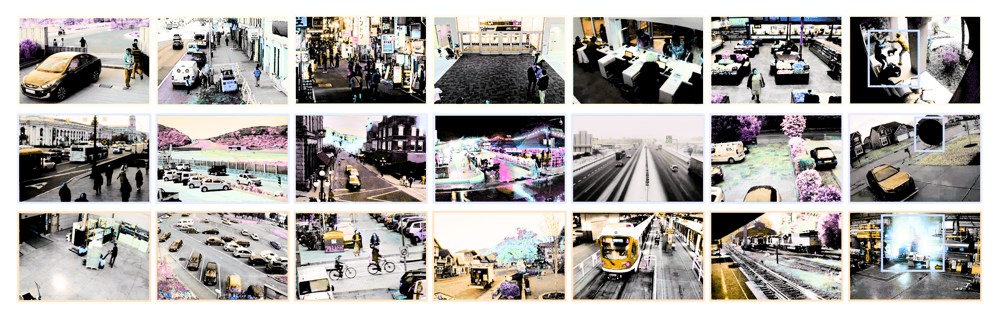
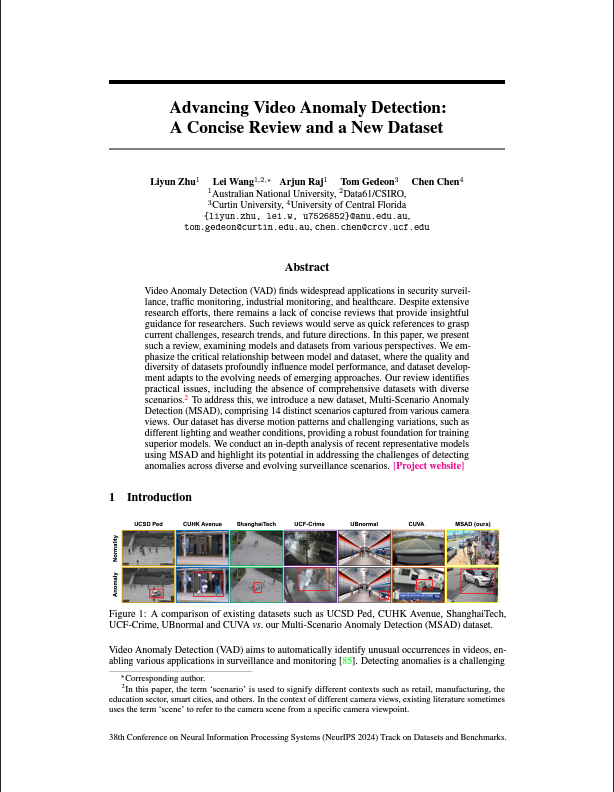

{kind=link}
Paper
Dataset
Code
|
|
|
|
|
|
|
|
|
|
|
|
Accepted at the 38th Conference on Neural Information Processing Systems (NeurIPS 2024) Track on Datasets and Benchmarks.
|
|
|
Overview: Our MSAD includes a diverse range of scenarios, both indoor and outdoor, featuring various objects, e.g., pedestrians, cars, trains, etc. The first row shows different real-world common motions, while the second row demonstrates variations in weather and lighting conditions. The third row displays different moving objects. The last column shows human- and non-human-related anomalies.
|
|
Paper |
Dataset |
Code |
720
Multiple
35
20
14
∼500
RGB
Multiple
| Main Anomaly Types | Detailed Anomaly Types | Domain | |
|---|---|---|---|
| Human-related | Assault | Assault on street | Crime |
| Assault in office | Crime | ||
| Other assault | Crime | ||
| Fighting | Fighting on street | Violence | |
| Fighting in a restaurant | Violence | ||
| Fighting in a shop | Violence | ||
| Fighting in front of a door | Violence | ||
| Fighting indoors | Violence | ||
| Other fighting | Violence | ||
| People Falling | People falling to ground | Pedestrian | |
| People falling into pool | Pedestrian | ||
| People falling from high places | Pedestrian | ||
| People falling into subway | Pedestrian | ||
| Other people falling | Pedestrian | ||
| Robbery | Shop robbery | Crime | |
| Office robbery | Crime | ||
| Theft | Crime | ||
| Car theft | Crime | ||
| Other robbery | Crime | ||
| Shooting | Shooting on the road | Crime | |
| Shooting indoors | Crime | ||
| Holding a gun | Crime | ||
| Other shooting | Crime | ||
| Traffic Accident | Car falling | Traffic | |
| Car crash | Traffic | ||
| Speeding | Traffic | ||
| Car rushing into building | Traffic | ||
| Car crash with people | Traffic | ||
| Car crash with object | Traffic | ||
| Car crash with train | Traffic | ||
| Motorcycle crash | Traffic | ||
| Other traffic accident | Traffic | ||
| Vandalism | Vandalizing glass | Violence | |
| Vandalizing door | Violence | ||
| Other vandalism | Violence | ||
| Non-human-related | Explosion | Street explosion | Emergency |
| Firework explosion | Emergency | ||
| Factory explosion | Emergency | ||
| Indoor explosion | Emergency | ||
| Other explosion | Emergency | ||
| Fire | Smoke | Emergency | |
| Factory fire | Emergency | ||
| Building on fire | Emergency | ||
| Bush fire | Emergency | ||
| Other fire | Emergency | ||
| Object Falling | Strong wind | Natural hazard | |
| Object falling in home | Emergency | ||
| Tree falling | Emergency | ||
| Large objects falling | Emergency | ||
| Glass falling | Emergency | ||
| Other objects falling | Emergency | ||
| Water Incident | Flood | Natural hazard | |
| Water leakage | Emergency | ||
| Heavy rain | Natural hazard | ||
| Other water incidents | Emergency |
|
|
|
|
| The statistics of MSAD dataset include: (left) a breakdown of main anomaly types and their respective percentages, (middle) a boxplot illustrating frame number variations across scenarios in MSAD training set, and (right) the distributions of train/test splits across scenarios. | ||
|
Based on the experimental results, we can deduce that a model trained on intricate real-world scenarios exhibits superior generalization. This stems from the fact that real-world models are frequently influenced by the surrounding environ ment, encompassing elements like fluctuating traffic patterns, dynamic electronic displays, and the movement of trees in the wind. The model must discern the nuances of anomaly detection within a dynamic environment and comprehend the dynamics of objects and/or performing subjects within it. MSAD dataset provides a comprehensive representation of real-world scenarios. |
|
||||||||||||||||||||||||||||||||||||||||||||||||||||||||||||||||||||||||||||||||||||||||||||||||||||||||||||||||||||||||||||||||||||||||||||||||||||||||||||||||||||||||||||||||||||||||||||||||||||||||||||||||||||||||||||||
| Training set | Method | Assault | Explosion | Fighting | Fire | ||||
|---|---|---|---|---|---|---|---|---|---|
| AUC | AP | AUC | AP | AUC | AP | AUC | AP | ||
| UCF-Crime | RTFM | 60.6 | 62.2 | 69.3 | 79.0 | 68.5 | 80.7 | 36.0 | 64.5 |
| MGFN | 60.5 | 62.0 | 65.5 | 74.3 | 53.6 | 63.9 | 21.6 | 55.0 | |
| UR-DMU | 59.4 | 60.5 | 69.3 | 82.0 | 71.2 | 85.2 | 36.2 | 66.5 | |
| MSAD | RTFM | 68.1 | 67.3 | 46.8 | 60.4 | 89.6 | 93.0 | 61.3 | 81.2 |
| MGFN | 59.7 | 59.0 | 64.5 | 71.9 | 89.4 | 93.5 | 86.0 | 93.0 | |
| UR-DMU | 56.9 | 64.5 | 67.9 | 74.5 | 83.9 | 90.4 | 61.2 | 82.9 | |
| Training set | Method | Object Falling | People Falling | Robbery | Shooting | ||||
| AUC | AP | AUC | AP | AUC | AP | AUC | AP | ||
| UCF-Crime | RTFM | 82.0 | 88.8 | 69.5 | 63.0 | 76.8 | 90.6 | 59.7 | 65.7 |
| MGFN | 65.5 | 73.1 | 57.2 | 59.5 | 72.0 | 89.1 | 42.1 | 57.6 | |
| UR-DMU | 72.4 | 76.5 | 69.3 | 57.6 | 69.7 | 81.5 | 59.9 | 73.8 | |
| MSAD | RTFM | 94.7 | 96.7 | 56.5 | 50.4 | 65.7 | 81.2 | 78.2 | 84.7 |
| MGFN | 90.9 | 94.8 | 52.7 | 47.8 | 73.9 | 86.7 | 86.8 | 88.5 | |
| UR-DMU | 92.1 | 95.8 | 42.5 | 43.7 | 63.5 | 79.3 | 81.4 | 87.8 | |
| Training set | Method | Traffic Accident | Vandalism | Water Incident | Overall | ||||
| AUC | AP | AUC | AP | AUC | AP | AUC | AP | ||
| UCF-Crime | RTFM | 55.6 | 45.1 | 86.0 | 85.2 | 93.5 | 98.5 | 71.9 | 47.4 |
| MGFN | 52.6 | 45.3 | 80.7 | 81.4 | 41.0 | 81.7 | 61.8 | 31.2 | |
| UR-DMU | 53.0 | 47.9 | 91.6 | 89.7 | 64.6 | 91.3 | 74.3 | 53.4 | |
| MSAD | RTFM | 62.2 | 51.8 | 85.2 | 76.1 | 96.3 | 99.1 | 86.7 | 66.3 |
| MGFN | 68.6 | 54.5 | 82.4 | 80.1 | 85.5 | 97.0 | 85.0 | 63.5 | |
| UR-DMU | 62.0 | 55.6 | 84.7 | 77.0 | 98.5 | 99.5 | 85.0 | 68.3 | |
Here is a display of prediction video for each anomaly type generated by RTFM.
|
||||||||||||||||||||||||||||||||||||||||||||||||||||||||||||||||||||||||||||||||||||||||||||||||||||||||||||||||||||||||||||||||||||||||||||||||||||||||||||||||||||||||||||||||||||||||||||||||||||||||||||||||||||||||||||||||||||||||||||||||||||||||||||||||||||||||||||||||||||||||
| Training set | Method | Frontdoor | Highway | Mall | Office | ||||
|---|---|---|---|---|---|---|---|---|---|
| AUC | AP | AUC | AP | AUC | AP | AUC | AP | ||
| UCF-Crime | RTFM | 80.8 | 80.1 | 37.1 | 1.4 | 86.0 | 87.1 | 68.5 | 63.2 |
| MGFN | 68.4 | 70.2 | 36.3 | 1.4 | 79.6 | 80.4 | 64.5 | 60.2 | |
| UR-DMU | 84.7 | 82.6 | 18.9 | 1.1 | 83.1 | 80.6 | 66.6 | 57.6 | |
| MSAD | RTFM | 84.1 | 81.1 | 63.7 | 4.1 | 87.2 | 72.2 | 78.1 | 68.8 |
| MGFN | 86.4 | 85.1 | 79.7 | 4.1 | 65.3 | 56.6 | 75.1 | 62.4 | |
| UR-DMU | 84.8 | 82.8 | 31.5 | 1.3 | 91.0 | 83.8 | 77.8 | 67.3 | |
| Training set | Method | Park | Parkinglot | Pedestrian St. | Restaurant | ||||
| AUC | AP | AUC | AP | AUC | AP | AUC | AP | ||
| UCF-Crime | RTFM | 75.3 | 23.7 | 66.7 | 16.7 | 84.1 | 67.6 | 66.5 | 56.5 |
| MGFN | 55.3 | 7.9 | 59.5 | 12.3 | 74.4 | 11.2 | 47.3 | 32.4 | |
| UR-DMU | 91.6 | 34.8 | 62.2 | 17.6 | 58.5 | 6.1 | 75.7 | 74.4 | |
| MSAD | RTFM | 69.0 | 25.6 | 74.4 | 35.9 | 97.4 | 50.6 | 96.1 | 91.9 |
| MGFN | 77.9 | 38.3 | 68.1 | 14.5 | 88.0 | 20.4 | 95.8 | 91.8 | |
| UR-DMU | 87.8 | 36.2 | 91.4 | 53.9 | 81.9 | 11.5 | 93.1 | 87.4 | |
| Training set | Method | Road | Shop | Sidewalk | Street Highview | ||||
| AUC | AP | AUC | AP | AUC | AP | AUC | AP | ||
| UCF-Crime | RTFM | 82.9 | 47.1 | 85.1 | 68.5 | 89.1 | 66.1 | 82.6 | 35.9 |
| MGFN | 54.4 | 18.3 | 69.4 | 60.4 | 47.4 | 26.4 | 37.2 | 8.3 | |
| UR-DMU | 49.5 | 26.6 | 78.8 | 66.5 | 68.0 | 55.9 | 62.0 | 23.0 | |
| MSAD | RTFM | 54.0 | 16.8 | 80.6 | 77.3 | 52.5 | 17.1 | 43.3 | 12.3 |
| MGFN | 77.9 | 49.7 | 84.9 | 77.2 | 85.5 | 62.3 | 87.6 | 40.7 | |
| UR-DMU | 83.0 | 64.4 | 81.3 | 64.5 | 86.5 | 64.1 | 85.0 | 37.7 | |
| Training set | Method | Train | Warehouse | Overall | |||||
| AUC | AP | AUC | AP | AUC | AP | ||||
| UCF-Crime | RTFM | 52.2 | 5.0 | 82.3 | 52.8 | 71.9 | 47.4 | ||
| MGFN | 39.8 | 2.1 | 55.4 | 18.3 | 61.8 | 31.2 | |||
| UR-DMU | 51.3 | 2.6 | 86.9 | 54.0 | 74.3 | 53.4 | |||
| MSAD | RTFM | 66.9 | 3.9 | 69.5 | 37.4 | 86.7 | 66.3 | ||
| MGFN | 53.0 | 3.1 | 72.3 | 30.9 | 85.0 | 63.5 | |||
| UR-DMU | 59.0 | 3.1 | 81.2 | 59.1 | 85.0 | 68.3 | |||
Here is a display of prediction video for each anomaly scenario generated by RTFM.
|
View Request Form |
 Download Directly |
|  |
Advancing Video Anomaly Detection: A Concise Review and a New Dataset |
{kind=link}
{kind=link}
{kind=link}